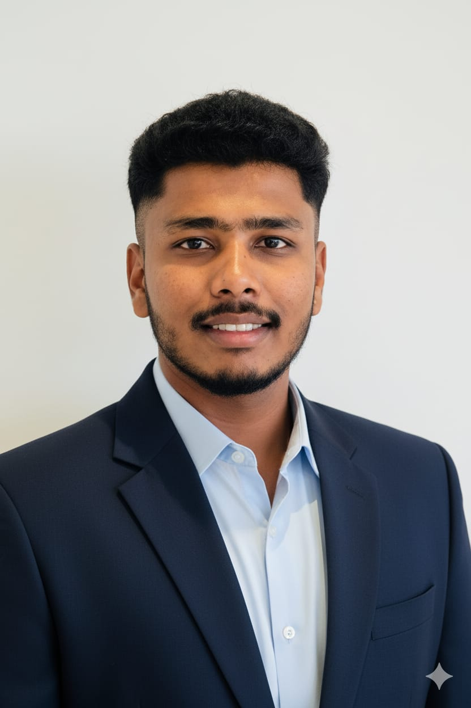

01 / ROAD GEOMETRY
Lane Topology
Representing lane connectivity, road structure and lane relationships to describe how traffic flows through a scene.
Building quality into the data that helps intelligent vehicles understand the world.
Team Lead with 6 years of experience across quality assurance, operations, team development and automotive data workflows — focused on reliable delivery, clear processes and high-quality outcomes.

AVINASH B NA hands-on operations and quality professional who brings structure to complex workflows and supports teams in meeting delivery expectations.
My experience spans team leadership, quality assurance, operational coordination and data-focused project delivery. I work across daily planning, performance monitoring, stakeholder communication, coaching and process improvement.
Within automotive data workflows, I am focused on structured annotation and collection processes that support advanced driver-assistance systems and machine-learning applications. I value consistency, clear guidelines and quality at every stage of delivery.
Clear expectations.
Consistent quality checks.
Practical coaching.
Measurable delivery.
Key annotation and human data-collection workstreams supporting intelligent mobility and perception systems.
Representing lane connectivity, road structure and lane relationships to describe how traffic flows through a scene.
2D annotation workflows for identifying and marking relevant objects and scene elements in sensor data.
3D object marking and spatial annotation to support accurate perception datasets and scene understanding.
Human-focused data collection workflows with attention to consistency, quality and process guidelines.
Structured data collection for robotics applications, supporting real-world perception, interaction and intelligent automation workflows.
Combining people management, quality systems and practical annotation platforms.
Progressively responsible roles across technology services and operations.
Academic project focused on protecting digital evidence using cloud storage concepts and AWS S3. The work reflects an interest in secure data handling and technology-enabled processes.
2025
English · Kannada · Hindi
For opportunities and collaborations in team leadership, quality assurance, operations and automotive data.
Contact me ↗